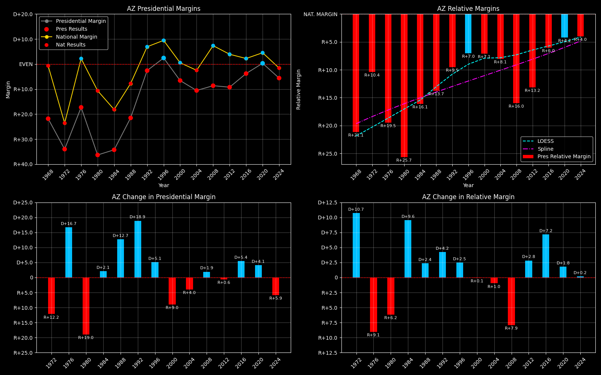

← Back to Map

Arizona (AZ) statewide
Arizona (AZ) — Data
| Year | EVs | D | R | Margin | Rel. Margin | Nat. Margin | Margin Δ | Rel. Margin Δ | Nat. Margin Δ | Other votes | Total votes |
|---|
| 1968 | 5 | 170,019(35.3%) | 264,806(55.0%) | R+21.8 | R+21.1 | R+0.7 | | | | 46,352(9.6%) | 481,177 |
| 1972 | 6 | 198,540(33.0%) | 402,812(67.0%) | R+34.0 | R+10.4 | R+23.6 | R+12.2 | D+10.7 | R+22.9 | 0(0.0%) | 601,352 |
| 1976 | 6 | 294,901(41.4%) | 418,079(58.6%) | R+17.3 | R+19.5 | D+2.2 | D+16.7 | R+9.1 | D+25.8 | 0(0.0%) | 712,980 |
| 1980 | 6 | 247,310(29.0%) | 529,071(62.0%) | R+36.3 | R+25.7 | R+10.6 | R+19.0 | R+6.2 | R+12.8 | 76,363(9.0%) | 852,744 |
| 1984 | 7 | 333,854(32.9%) | 681,416(67.1%) | R+34.2 | R+16.1 | R+18.1 | D+2.1 | D+9.6 | R+7.5 | 0(0.0%) | 1,015,270 |
| 1988 | 7 | 454,029(39.3%) | 702,541(60.7%) | R+21.5 | R+13.7 | R+7.8 | D+12.7 | D+2.4 | D+10.4 | 0(0.0%) | 1,156,570 |
| 1992 | 8 | 543,050(37.0%) | 572,086(38.9%) | R+2.6 | R+9.5 | D+6.9 | D+18.9 | D+4.2 | D+14.7 | 353,741(24.1%) | 1,468,877 |
| 1996 | 8 | 653,288(47.1%) | 622,073(44.8%) | D+2.4 | R+7.0 | D+9.5 | D+5.1 | D+2.5 | D+2.6 | 112,074(8.1%) | 1,387,435 |
| 2000 | 8 | 685,341(44.7%) | 781,652(51.0%) | R+6.6 | R+7.1 | D+0.5 | R+9.0 | R+0.1 | R+8.9 | 64,773(4.2%) | 1,531,766 |
| 2004 | 10 | 893,524(44.4%) | 1,104,294(54.9%) | R+10.6 | R+8.1 | R+2.5 | R+4.0 | R+1.0 | R+3.0 | 12,750(0.6%) | 2,010,568 |
| 2008 | 10 | 1,034,707(45.1%) | 1,230,111(53.7%) | R+8.6 | R+16.0 | D+7.4 | D+1.9 | R+7.9 | D+9.8 | 27,262(1.2%) | 2,292,080 |
| 2012 | 11 | 1,025,232(44.6%) | 1,233,654(53.7%) | R+9.2 | R+13.2 | D+3.9 | R+0.6 | D+2.8 | R+3.4 | 39,916(1.7%) | 2,298,802 |
| 2016 | 11 | 1,161,167(44.6%) | 1,252,401(48.1%) | R+3.8 | R+6.0 | D+2.2 | D+5.4 | D+7.2 | R+1.7 | 191,012(7.3%) | 2,604,580 |
| 2020 | 11 | 1,672,143(49.4%) | 1,661,686(49.1%) | D+0.3 | R+4.2 | D+4.5 | D+4.1 | D+1.8 | D+2.3 | 51,465(1.5%) | 3,385,294 |
| 2024 | 11 | 1,582,860(46.7%) | 1,770,242(52.2%) | R+5.6 | R+4.0 | R+1.6 | R+5.9 | D+0.2 | R+6.1 | 37,059(1.1%) | 3,390,161 |
Column explanations
- Year
- Election year.
- EVs
- Number of electoral votes allocated to this state or unit.
- D
- Number of votes for the Democratic candidate (raw count).
- R
- Number of votes for the Republican candidate (raw count).
- Margin
- Margin between the two major-party candidates ((D - R)/(D + R)).
- Rel. Margin
- The presidential margin relative to the national presidential margin (Margin - Nat. Margin).
- Nat. Margin
- The national presidential margin for that year ((D_total - R_total)/(D_total + R_total)).
- Δ
- Change (delta) in the value from the previous election year. Blank if no data for previous year.
- Other votes
- Number of votes for third-party (other) candidates (raw count).
- Total votes
- Total voter turnout or ballots cast (when provided).